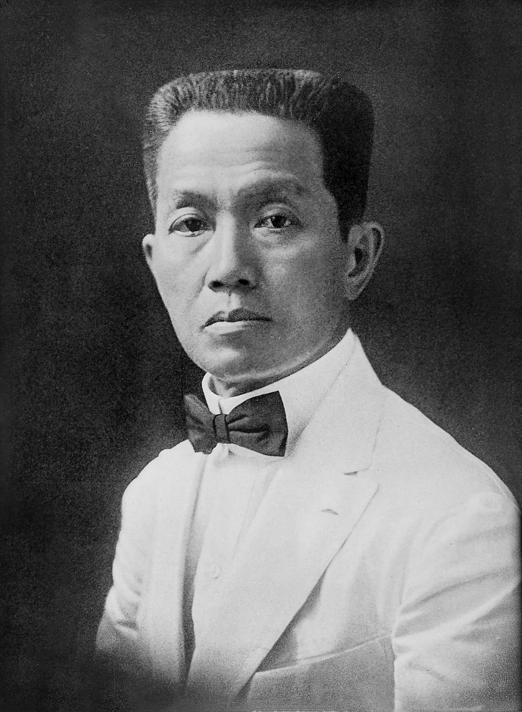
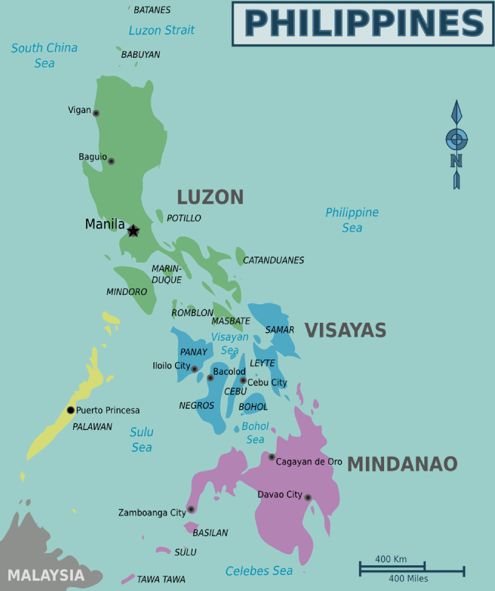
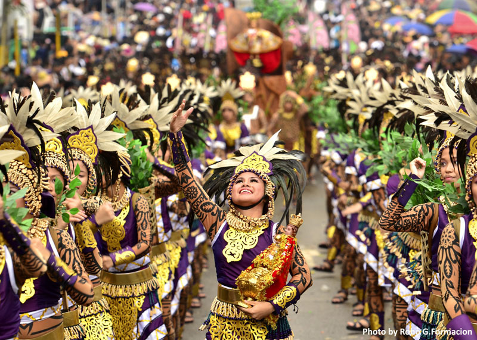

Day,
Month
00,
Year
00:
00:
00
AM
The Philippines has a rich and complex history that goes back north of 700,000 years. The
earliest occupants of the Philippines were Negrito gatherings, who showed up from Southeast
Asia something like quite a while back. By around 3000 BC, Austronesian people groups started
to relocate to the islands from Taiwan. These individuals carried with them their way of life,
language, and lifestyle, which would ultimately frame the premise of Filipino culture.
In the fourteenth hundred years, Islam started to spread to the Philippines from the south. By the sixteenth
100 years, Islam had turned into the predominant religion in Mindanao and portions of Sulu.

In 1521, Portuguese adventurer Ferdinand Magellan showed up in the Philippines for Spain.
He asserted the islands for Spain and named them after Ruler Philip II. Be that as it may,
Magellan was killed in a fight with neighborhood clan leaders on the island of Mactan.
In 1565, Spanish conqueror Miguel López de Legazpi got back to the Philippines and laid out a super durable
Spanish settlement in Cebu. Over the course of the following three centuries, Spain colonized the Philippines,
presenting Catholicism, Spanish language, and culture.

In 1896, the Philippine Upset disrupted out contrary to Spanish guideline. The upheaval
was driven by Emilio Aguinaldo, who laid out the Main Philippine Republic in 1898. Be
that as it may, the unrest was stopped by the Spanish-American Conflict, where the US
crushed Spain and assumed command over the Philippines.
The US administered the Philippines for a long time, during which time it presented American style a majority
rule government and instruction. In any case, the US additionally stifled Filipino patriotism and took advantage
of the nation's assets.
In 1941, Japan attacked the Philippines during The Second Great War. The Philippines was
involved by Japan for quite some time, during which time the nation experienced broad
passing and obliteration.
After the conflict, the Philippines recaptured its autonomy from the US in 1946. The nation has since confronted
various difficulties, including destitution, defilement, and political unsteadiness. Be that as it may, the
Philippines has likewise gained critical headway as of late and is currently viewed as one of the arising
economies of Asia.
Geography and Environment of the Philippines
The Philippines, an archipelago of more than 7,000 islands, is a Southeast Asian country prestigious for its
dazzling normal excellence and different environments. Its topography and climate assume a huge part in molding
its way of life, economy, and lifestyle.

The Philippines is arranged in the Western Pacific Sea, settled between Taiwan
toward the north, Indonesia toward the south, and Vietnam toward the west. Its
immense regional territory, extending more than 300,000 square kilometers, is
separated into three significant island gatherings: Luzon, Visayas, and Mindanao.
Luzon: The biggest and most crowded island bunch, Luzon is home to the capital
city of Manila and the famous Banaue Rice Porches, an UNESCO World Legacy Site.
Visayas: Vital to the archipelago, the Visayas district is known for its dynamic
celebrations, like the Sinulog in Cebu City.
Mindanao: The southernmost and second-biggest island bunch, Mindanao is portrayed
by its rough mountains, lavish rainforests, and various native societies.
Demographics
The Philippines is a Southeast Asian archipelago made of north of 7,000 islands, with a complete land area of
300,000 square kilometers (115,831 sq mi). Starting around 2023, the Philippines has an expected populace of
117.34 million individuals, making it the thirteenth most crowded country on the planet.
Population Growth
The Philippines has a generally youthful populace, with a middle period of 25.2 years. The country's
populace is developing at a yearly pace of 1.53%. This development is supposed to go on before long,
with the populace projected to reach 142 million by 2050.
Population Distribution
Most of the Philippine populace is gathered in the three principal island gatherings: Luzon, Visayas,
and Mindanao. Luzon is the most crowded island bunch, with more than half of the nation's populace.
Visayas and Mindanao each have around 25% of the populace.
Ethnicity
Most of Filipinos are Austronesian, with the biggest ethnic gatherings being Tagalog, Cebuano, and
Ilocano. There are likewise critical minorities of Chinese, Spanish, and American plunge.
Religion
The Philippines is a dominatingly Catholic country, with more than 80% of the populace recognizing as
Catholic. Islam is the second biggest religion, with around 5% of the populace. There are likewise huge
minority gatherings of Protestants, Evangelicals, and Buddhists.
Language
The Philippines has two authority dialects: Filipino and English. Filipino is a normalized variant of
Tagalog, while English is broadly utilized in business, government, and schooling. There are likewise
north of 180 native dialects spoken in the country.
Culture
Filipino culture is a dynamic and different embroidery woven from the strings of different impacts, including
native practices, Spanish imperialism, and American rule. It is portrayed by a profound appreciation for
family, local area, and friendliness.
Family
The family is the foundation of Filipino society. More distant families, frequently
comprising grandparents, aunties, uncles, and cousins, live respectively or in
nearness. Family ties areas of strength are relatives offer help and help to each
other over the course of life.
Community
Filipinos are known for areas of strength for them of local area. They are much
of the time able to help neighbors and companions out of luck, and they take part
in an assortment of local area occasions, like celebrations and bayanihan, a
conventional act of public work.
Hospitality
Filipinos are known for areas of strength for them of local area. They are much of
the time able to help neighbors and companions out of luck, and they take part in an
assortment of local area occasions, like celebrations and bayanihan, a conventional
act of public work.
Food
Filipino food is a heavenly and different mix of flavors, mirroring the country's rich
history and social impacts. Well known dishes incorporate adobo, an exquisite stew of
meat or fish, sinigang, a harsh soup, and lechon, a simmered pig.

Festival
Celebrations are a significant piece of Filipino culture. They are praised consistently,
frequently out of appreciation for holy people or nearby legends. Well known celebrations
remember the Sinulog Celebration for Cebu, the Ati-Atihan Celebration in Aklan, and the
Dinagyang Celebration in Iloilo.
Tourist Attractions
Luzon Tourist Attractions

Rice Terraces
These UNESCO World Legacy Site porches are a wonder of designing and a
demonstration of the creativity of the Ifugao public.

Mayon Volcano
This completely conelike fountain of liquid magma is a notorious
milestone of Albay area and one of the most dynamic volcanoes in
the Philippines.

Puerto Princesa Subterranean River National Park
Another UNESCO World Legacy Site, this park is home to an underground
waterway that is safe by boat.

Boracay
This famous island resort is known for its white sand seashores, clear
waters, and lively nightlife.

Pagsanjan Falls
This waterfall is a popular destination for swimming, hiking,
and spelunking.
Visayas Tourist Attractions

Chocolate Hills
These extraordinary topographical developments seem to be goliath
Hershey's Kisses, and are a well-known vacation destination in Bohol.

Oslob Whale Sharks
These delicate goliaths should be visible swimming with travelers in
the waters from Oslob, Cebu.

Malapascua Island
This little island is a famous jumping objective, because of its
overflow of harvester sharks.

Bohol Island
This island is home to the Chocolate Slopes, Tarsier monkeys,
and the Loboc Waterway Voyage.

Panglao Falls
This island is known for its delightful seashores, resorts,
and eateries.
Mindanao Tourist Attractions

Siargao
This island is a surfer's heaven, with probably the best waves on the planet.

Lake Lanao
This crater lake is the biggest collection of freshwaters in the Philippines,
and is home to an assortment of fish and natural life.

Maria Christina Falls
This cascade is the most elevated in the Philippines, and is a famous objective
for swimming and climbing.

Dakak Park
This eco-park is home to various plants and animals, including the
Philippine eagle.

Magat Falls
This cascade is quite possibly one of the most gorgeous in the
Philippines, and is a famous objective for swimming and photography.
References
Scott, W. H. (1985). The non-Negrito peoples of the Philippines. Greenwood Press.
Reid, A. (2010). Southeast Asia in the age of commerce, 1450-1600: Volume 1, The lands below
the winds. Yale University Press.
Majul, C. A. (1973). Muslims in the Philippines. Ateneo de Manila University Press.
Diffie, W. G., & Winius, G. D. (1977). Foundations of Portuguese empire, 1415-1557. University
of Minnesota Press.
Blair, E. H., & Robertson, J. A. (1903-1909). The Philippine islands, 1493-1898. A. H. Clark
Company.
Taylor, J. (2009). The Philippine revolution. Penguin Books.
Karnow, S. (1980). In search of nowhere: A journey through the Philippines. Penguin Books.
Spector, R. H. (1988). Eagle against the sun: The American and Japanese campaigns in the
Pacific, 1941-1945. New York: Random House.
The World Factbook 2022. (2022). Central Intelligence Agency.
PSA. (2023, May 11). Population of the Philippines reaches 117.34 million in 2023. Philippine
Statistics Authority.
World Population Review. (2023). Philippines Population. World Population Review.
PSA. (n.d.). Population by Region, 2020 Census. Philippine Statistics Authority.
CIA. (2023). The World Factbook 2023 - Philippines. Central Intelligence Agency.
Pew Research Center. (2019, November 29). Philippines. Pew Research Center's Religion & Public
Life Project.
Commission on the Filipino Language (KAWIKA). (n.d.). Ang Filipino at ang Ingles. Komisyon sa
Wikang Filipino (KAWIKA).
Abella, J. (2020). The Filipino family: Continuity amidst change. In The Routledge Companion to
the Filipino Diaspora (pp. 95-112). Routledge.
Jocano, F. L. (2009). Filipino bayanihan: A concept of communal unity and cooperation (pp. 25-
30). In Asian Contributions to Psychology, 21(1-2), 25-30.
Gonzalez, A. B. (1981). Hospitality in Philippine culture: A study in the values of transformation.
In International Journal of Intercultural Relations, 5(4), 441-458.
Romero, S. V. (2019). Filipino cuisine: A culinary journey from the Philippines to the global stage.
In Culinary Arts and Science, 2(1), 1-3.
Pe-Pua, R. C. (2010). Embodying the nation: Performing citizenship through fiestas in the
Philippines. In Asian Theatre Journal, 28(2), 281-308.
Philippine Tourism Authority. (2023). Top 50 Must-Visit Tourist Destinations in the Philippines.
Philippine Tourism Authority.